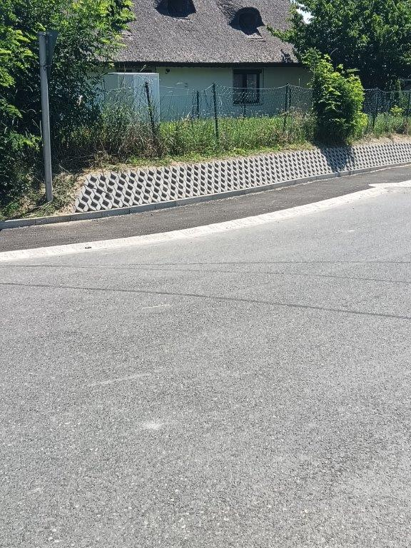
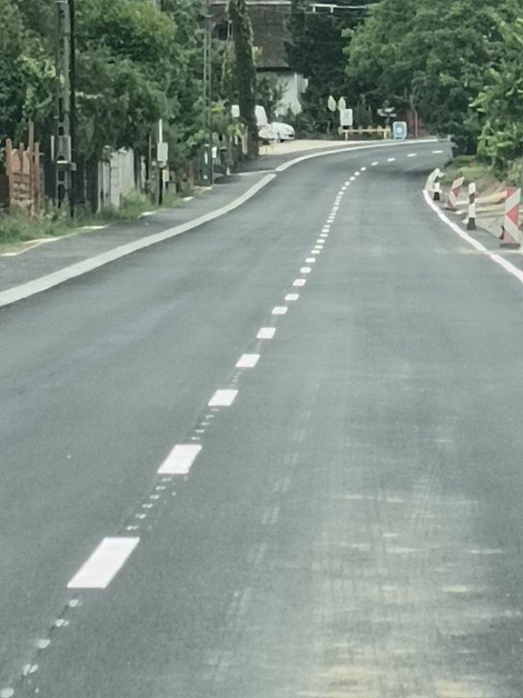
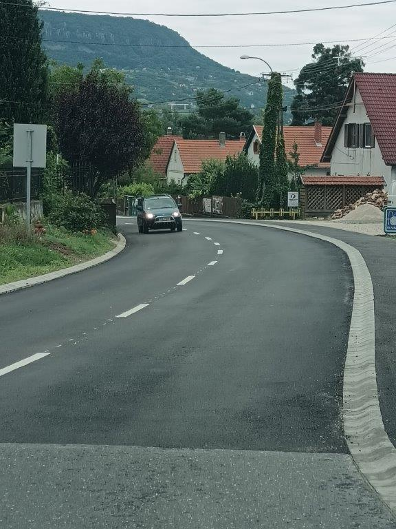
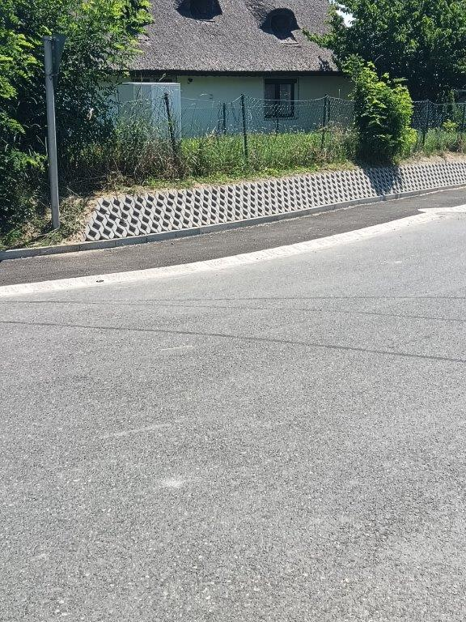
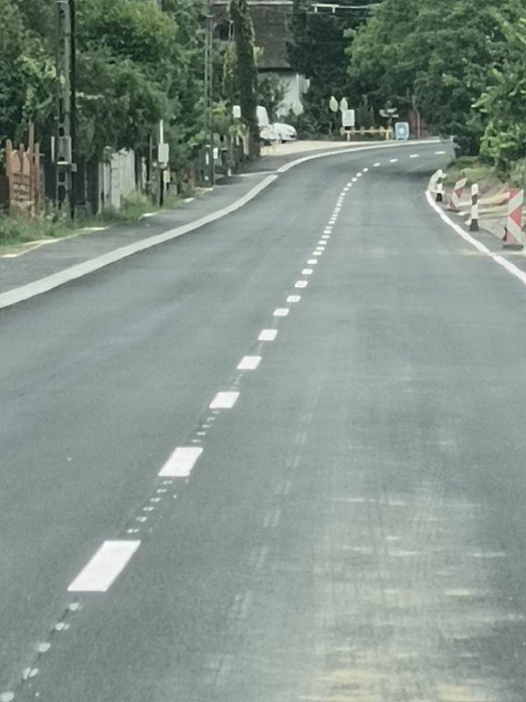
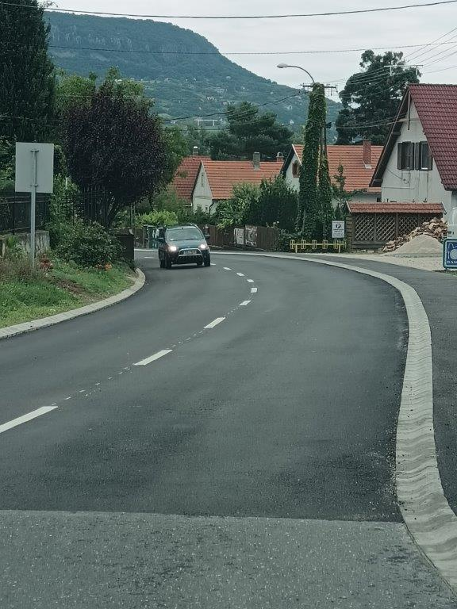

Balatonkenese - Márkó utca


Balatonkenese - Márkó utca
3-4 méter széles aszfaltos burkolatú út felújítása és széletsítése.
Az út mellett zárt csapadékcsatorna épült, mely mellé "K" szegély épült.
Dátum: 2025.05 – 2025.06.
Helyszín: Balatonkenese - Márkó utca
Bekerülési költség: 14MFt + ÁFA


Bánd – Kossuth utca egy szakaszának útburkolat felújítási munkái
Meglévő aszfaltburkolatú út erősítése, szükséges helyeken „K” szegély építése
Dátum: 2025.10.
Helyszín: Bánd, Kossuth utca egy szakasza
Bekerülési költség: 5MFt + ÁFA
Hegymagas – Kisapáti összekötő út egy szakaszának felújítása
Rossz vízelvezetés miatt tönkrement aszfaltburkolat felújítása megfelelő oldalesés kialakításával és a csapadékvíz útról történő elvezetésével
Dátum: 2025.09.
Helyszín: Hegymagas – Kisapáti összekötő út
Bekerülési költség: 4MFt + ÁFA
Bánd – Kossuth utca
Hegymagas

Németbánya


Németbánya
Szennyvízcsatorna építést követő útburkolat helyreállítás
Dátum: 2025.06 - 2025.07.
Helyszín: Németbánya, Fő utca
Bekerülési költség: 43MFt + ÁFA


P+R parkoló építése Dömsöd-Taksony-Dunavarsány
Budapest-Belgrád vasútvonal építéséhez kapcsolódó állomás parkolók, járdák építése csapadékvíz elvezetéssel
Dátum: 2025.02. – 2025.11.
Helyszín: Dömsöd-Taksony-Dunavarsány
Bekerülési költség: 176MFt + ÁFA


Tapolca
Járdák, parkolók felújítása, forgalomtechnikai javítások több csomópontban
Dátum: 2025. év
Helyszín: Tapolca (Kazinczy tér, Kossuth utca, Berzsenyi-Kazinczy csp, Zrínyi-Petőfi-Táncsics csp.)
Bekerülési költség: 58MFt + ÁFA
Dömsöd-Taksony-Dunavarsány
Tapolca
Balatonszepezd - Árpád utca
Árpád utca felújítása
A szűk, többszöri közműépítést követően felszabdalt útpálya szélesítése, új aszfalt kopóréteg beépítése, csapadékvíz elvezetés kialakítása
Dátum: 2024.03-04.
Helyszín: Balatonszepezd, Árpád utca
Bekerülési költség: 24,2MFt + ÁFA
Strand bevezető út felújítása
A poros, aszfaltfoltos, kátyús útszakasz új aszfalt kopóréteggel történő átépítése
Dátum: 2024.05.
Helyszín: Balatonudvari, strandi parkoló
Bekerülési költség: 6,1MFt + ÁFA


Mártonhegyi utca felújítása
MFP programban a keskeny utca bővítése és aszfaltburkolatú felújítása
Dátum: 2024.10.
Helyszín: Bánd, Mértonhegyi utca
Bekerülési költség: 13,7MFt + ÁFA
Balatonudvari - Strand bevezető út
Bánd - Mártonhegyi út
Szigliget - Iharos utca
 





Iharos utca felújítása
A meglévő 4,5-5,0m széles út bővítése 5,5m szélesre, mellette aszfaltos burkolt padka kialakítása, nyílt földárok burkolása
Dátum: 2024.04-05.
Helyszín: Szigliget, Iharos utca
Bekerülési költség: 43,3MFt + ÁFA


Lakóparki úthálózat kiépítése
A többlakásos társasház megközelítését szolgáló utak, parkolók kiépítése, zöldfelület rendezése, támfalak építése
Dátum: 2024.10-12.
Helyszín: Veszprém, Boksa tér
Bekerülési költség: 14,6MFt + ÁFA
Parti sétány kialakítása
A földes, sáros, iszapos területen a partra vezető sétány kialakítása, mocsári ciprusok védelmét ellátó fahidak közbeiktatásával, pihenőpadokkal, közvilágítással
Dátum: 2024.02-05.
Helyszín: Zánka, Csemetekert utca végén a Balaton parton
Bekerülési költség: 58,5MFt + ÁFA